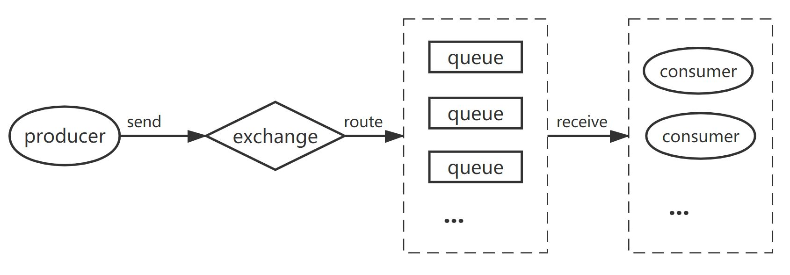

1. RabbitMQ¶
将消息通过队列分发给消费者
producer：发送消息给exchange
exchange：接收生产者的消息并按路线发送（route）到队列中。exchange有四种类型：direct, topic, headers, fanout；每一种类型下具体的匹配规则称为binding
fanout：分发给每个消费者
direct：通过两个routing_key之间的匹配关系进行分发（生产者发布消息时的routing_key、队列绑定交换机时的routing_key）
- 例：routing_key：’orange’
- 注：RabbitMQ默认的exchange是direct：exchange为空字符串时，RabbitMQ会为每个队列绑定一个值为队列名的routing_key
topic：与direct相比，routing_key变为多个属性
- 例：routing_key： ‘ * .orange. * ‘, ‘ * . * .rabbit’, ‘lazy.#’
headers：很少使用
queue：存储消息（和交换机绑定以存储需要的信息）
consumer：从某一个队列中获取消息并处理
1.1. AMQP¶
RabbitMQ是用Erlang语言开发、基于AMQP的一个broker server
1.1.1. connection¶
一个application和broker server之间的连接（是基于TCP的长连接）
1.1.2. channel¶
一个application和broker server有多个连接时，每一个连接即一个channel（这些channel共用一个connection）
1.1.3. virtual host¶
一个broker server可以创建多个隔离的AMQP环境（拥有自己的队列、绑定和交换机），每一个AMQP环境即一个virtual host